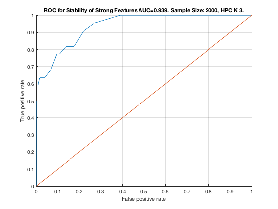

Feature Stability of HPC_K_3 on ErrNet with 2000 samples.
unit_stability_type(2000, 1, "ErrNet")
Figure 117. ROC for Stability of Strong Features AUC=0.939. Sample Size: 2000, HPC K 3. ________________________________________________________________________________________
Table 117. Feature Stability of HPC K 3 on ErrNet with 2000 samples.
_____________________________________________________________________
SELECTED COUNTS: Strong=22, Weak=250, Irrelevant=4
TOTAL COUNTS: Strong=23, Weak=1300, Irrelevant=4
Feature_Number Stability Type Path_Length N_MBS Equivalence
______________ _________ ____________ ___________ _____ ___________
23 ' 0.620 ' ' STRONG ' 3 0 21
20 ' 0.460 ' ' STRONG ' 3 0 18
19 ' 0.230 ' ' STRONG ' 2 0 18
22 ' 0.224 ' ' STRONG ' 2 0 21
21 ' 0.154 ' ' STRONG ' 1 0 21
18 ' 0.114 ' ' STRONG ' 1 0 18
6 ' 0.100 ' ' STRONG ' 3 0 1
5 ' 0.062 ' ' STRONG ' 3 0 1
11 ' 0.060 ' ' STRONG ' 4 0 7
17 ' 0.044 ' ' STRONG ' 4 18 12
4 ' 0.040 ' ' STRONG ' 4 27 1
76 ' 0.036 ' ' weak ' 6 27 49
1234 ' 0.032 ' ' weak ' 8 27 33
3 ' 0.030 ' ' STRONG ' 4 36 1
10 ' 0.028 ' ' STRONG ' 4 72 7
8 ' 0.026 ' ' STRONG ' 2 108 7
42 ' 0.026 ' 'irrelevant' Inf 108 42
702 ' 0.026 ' ' weak ' 4 108 51
615 ' 0.024 ' ' weak ' 5 108 38
943 ' 0.024 ' ' weak ' 5 108 28
69 ' 0.022 ' ' weak ' 5 108 38
440 ' 0.022 ' ' weak ' 6 108 49
891 ' 0.022 ' ' weak ' 5 108 28
986 ' 0.022 ' ' weak ' 6 108 49
9 ' 0.020 ' ' STRONG ' 3 144 7
320 ' 0.020 ' ' weak ' 11 144 29
544 ' 0.020 ' ' weak ' 6 144 49
695 ' 0.020 ' ' weak ' 3 144 40
734 ' 0.020 ' ' weak ' 6 144 27
809 ' 0.020 ' ' weak ' 4 144 24
1177 ' 0.020 ' ' weak ' 5 144 28
1265 ' 0.020 ' ' weak ' 5 144 38
2 ' 0.018 ' ' STRONG ' 2 180 1
16 ' 0.018 ' ' STRONG ' 2 360 12
95 ' 0.018 ' ' weak ' 5 360 38
293 ' 0.018 ' ' weak ' 5 360 28
319 ' 0.018 ' ' weak ' 5 360 28
364 ' 0.018 ' ' weak ' 4 360 51
648 ' 0.018 ' ' weak ' 6 360 49
947 ' 0.018 ' ' weak ' 8 360 32
1291 ' 0.018 ' ' weak ' 5 360 38
459 ' 0.016 ' ' weak ' 5 360 38
934 ' 0.016 ' ' weak ' 6 360 49
1178 ' 0.016 ' ' weak ' 11 360 29
14 ' 0.014 ' ' STRONG ' 3 540 12
47 ' 0.014 ' 'irrelevant' Inf 540 47
55 ' 0.014 ' ' weak ' 4 540 24
89 ' 0.014 ' ' weak ' 8 540 32
113 ' 0.014 ' ' weak ' 10 540 30
426 ' 0.014 ' ' weak ' 9 540 31
675 ' 0.014 ' ' weak ' 5 540 50
1081 ' 0.014 ' ' weak ' 8 540 36
1204 ' 0.014 ' ' weak ' 11 540 29
137 ' 0.012 ' ' weak ' 5 540 28
146 ' 0.012 ' ' weak ' 6 540 37
198 ' 0.012 ' ' weak ' 6 540 37
494 ' 0.012 ' ' weak ' 4 540 51
537 ' 0.012 ' ' weak ' 5 540 38
754 ' 0.012 ' ' weak ' 4 540 51
830 ' 0.012 ' ' weak ' 6 540 49
938 ' 0.012 ' ' weak ' 5 540 53
1047 ' 0.012 ' ' weak ' 5 540 28
1189 ' 0.012 ' ' weak ' 3 540 40
7 ' 0.010 ' ' STRONG ' 1 675 7
13 ' 0.010 ' ' STRONG ' 2 900 12
43 ' 0.010 ' 'irrelevant' Inf 900 43
261 ' 0.010 ' ' weak ' 4 900 52
277 ' 0.010 ' ' weak ' 5 900 38
562 ' 0.010 ' ' weak ' 6 900 37
614 ' 0.010 ' ' weak ' 6 900 37
710 ' 0.010 ' ' weak ' 11 900 29
746 ' 0.010 ' ' weak ' 4 900 39
875 ' 0.010 ' ' weak ' 5 900 38
901 ' 0.010 ' ' weak ' 5 900 38
1032 ' 0.010 ' ' weak ' 4 900 39
1152 ' 0.010 ' ' weak ' 11 900 29
15 ' 0.008 ' ' STRONG ' 3 1125 12
78 ' 0.008 ' ' weak ' 4 1125 51
278 ' 0.008 ' ' weak ' 4 1125 39
409 ' 0.008 ' ' weak ' 3 1125 40
564 ' 0.008 ' ' weak ' 4 1125 39
631 ' 0.008 ' ' weak ' 5 1125 28
642 ' 0.008 ' ' weak ' 4 1125 39
744 ' 0.008 ' ' weak ' 6 1125 37
849 ' 0.008 ' ' weak ' 5 1125 38
969 ' 0.008 ' ' weak ' 5 1125 28
970 ' 0.008 ' ' weak ' 11 1125 29
988 ' 0.008 ' ' weak ' 4 1125 51
1033 ' 0.008 ' ' weak ' 3 1125 40
1317 ' 0.008 ' ' weak ' 5 1125 38
12 ' 0.006 ' ' STRONG ' 1 1350 12
163 ' 0.006 ' ' weak ' 5 1350 28
194 ' 0.006 ' ' weak ' 8 1350 33
216 ' 0.006 ' ' weak ' 11 1350 29
330 ' 0.006 ' ' weak ' 4 1350 39
337 ' 0.006 ' ' weak ' 5 1350 50
371 ' 0.006 ' ' weak ' 5 1350 28
381 ' 0.006 ' ' weak ' 5 1350 38
492 ' 0.006 ' ' weak ' 6 1350 49
519 ' 0.006 ' ' weak ' 5 1350 50
579 ' 0.006 ' ' weak ' 5 1350 28
610 ' 0.006 ' ' weak ' 8 1350 33
632 ' 0.006 ' ' weak ' 11 1350 29
709 ' 0.006 ' ' weak ' 5 1350 28
797 ' 0.006 ' ' weak ' 5 1350 38
806 ' 0.006 ' ' weak ' 4 1350 51
823 ' 0.006 ' ' weak ' 5 1350 38
917 ' 0.006 ' ' weak ' 5 1350 28
953 ' 0.006 ' ' weak ' 5 1350 38
962 ' 0.006 ' ' weak ' 4 1350 51
1058 ' 0.006 ' ' weak ' 4 1350 39
1090 ' 0.006 ' ' weak ' 6 1350 49
1111 ' 0.006 ' ' weak ' 3 1350 40
1133 ' 0.006 ' ' weak ' 8 1350 36
1163 ' 0.006 ' ' weak ' 3 1350 40
1196 ' 0.006 ' ' weak ' 4 1350 51
1238 ' 0.006 ' ' weak ' 6 1350 37
1246 ' 0.006 ' ' weak ' 6 1350 49
1249 ' 0.006 ' ' weak ' 4 1350 52
1255 ' 0.006 ' ' weak ' 5 1350 28
1286 ' 0.006 ' ' weak ' 8 1350 33
44 ' 0.004 ' 'irrelevant' Inf 1350 44
75 ' 0.004 ' ' weak ' 6 1350 48
128 ' 0.004 ' ' weak ' 6 1350 49
199 ' 0.004 ' ' weak ' 5 1350 38
204 ' 0.004 ' ' weak ' 7 1350 46
209 ' 0.004 ' ' weak ' 4 1350 52
314 ' 0.004 ' ' weak ' 5 1350 53
329 ' 0.004 ' ' weak ' 5 1350 38
414 ' 0.004 ' ' weak ' 6 1350 49
424 ' 0.004 ' ' weak ' 11 1350 29
433 ' 0.004 ' ' weak ' 5 1350 38
461 ' 0.004 ' ' weak ' 3 1350 40
501 ' 0.004 ' ' weak ' 5 1350 28
553 ' 0.004 ' ' weak ' 5 1350 28
563 ' 0.004 ' ' weak ' 5 1350 38
574 ' 0.004 ' ' weak ' 5 1350 53
657 ' 0.004 ' ' weak ' 5 1350 28
694 ' 0.004 ' ' weak ' 4 1350 39
829 ' 0.004 ' ' weak ' 6 1350 48
848 ' 0.004 ' ' weak ' 6 1350 37
852 ' 0.004 ' ' weak ' 3 1350 41
921 ' 0.004 ' ' weak ' 8 1350 32
924 ' 0.004 ' ' weak ' 7 1350 35
926 ' 0.004 ' ' weak ' 6 1350 37
960 ' 0.004 ' ' weak ' 6 1350 49
971 ' 0.004 ' ' weak ' 10 1350 30
995 ' 0.004 ' ' weak ' 5 1350 28
1038 ' 0.004 ' ' weak ' 6 1350 49
1118 ' 0.004 ' ' weak ' 4 1350 51
1134 ' 0.004 ' ' weak ' 6 1350 37
1160 ' 0.004 ' ' weak ' 6 1350 37
1162 ' 0.004 ' ' weak ' 4 1350 39
1223 ' 0.004 ' ' weak ' 4 1350 52
1267 ' 0.004 ' ' weak ' 3 1350 40
1270 ' 0.004 ' ' weak ' 7 1350 46
1282 ' 0.004 ' ' weak ' 11 1350 29
1302 ' 0.004 ' ' weak ' 5 1350 53
1315 ' 0.004 ' ' weak ' 8 1350 36
27 ' 0.002 ' ' weak ' 6 1350 27
80 ' 0.002 ' ' weak ' 5 1350 53
81 ' 0.002 ' ' weak ' 4 1350 24
84 ' 0.002 ' ' weak ' 6 1350 27
100 ' 0.002 ' ' weak ' 7 1350 46
107 ' 0.002 ' ' weak ' 4 1350 24
116 ' 0.002 ' ' weak ' 8 1350 33
120 ' 0.002 ' ' weak ' 6 1350 37
121 ' 0.002 ' ' weak ' 5 1350 38
122 ' 0.002 ' ' weak ' 4 1350 39
126 ' 0.002 ' ' weak ' 7 1350 46
138 ' 0.002 ' ' weak ' 11 1350 29
141 ' 0.002 ' ' weak ' 8 1350 32
145 ' 0.002 ' ' weak ' 8 1350 36
148 ' 0.002 ' ' weak ' 4 1350 39
156 ' 0.002 ' ' weak ' 4 1350 51
173 ' 0.002 ' ' weak ' 5 1350 38
174 ' 0.002 ' ' weak ' 4 1350 39
189 ' 0.002 ' ' weak ' 5 1350 28
217 ' 0.002 ' ' weak ' 10 1350 30
224 ' 0.002 ' ' weak ' 6 1350 37
225 ' 0.002 ' ' weak ' 5 1350 38
236 ' 0.002 ' ' weak ' 5 1350 53
251 ' 0.002 ' ' weak ' 5 1350 38
267 ' 0.002 ' ' weak ' 5 1350 28
276 ' 0.002 ' ' weak ' 6 1350 37
298 ' 0.002 ' ' weak ' 8 1350 33
303 ' 0.002 ' ' weak ' 5 1350 38
318 ' 0.002 ' ' weak ' 6 1350 27
331 ' 0.002 ' ' weak ' 3 1350 40
336 ' 0.002 ' ' weak ' 6 1350 49
345 ' 0.002 ' ' weak ' 5 1350 28
350 ' 0.002 ' ' weak ' 8 1350 33
360 ' 0.002 ' ' weak ' 7 1350 46
372 ' 0.002 ' ' weak ' 11 1350 29
373 ' 0.002 ' ' weak ' 10 1350 30
374 ' 0.002 ' ' weak ' 9 1350 31
375 ' 0.002 ' ' weak ' 8 1350 32
387 ' 0.002 ' ' weak ' 6 1350 48
405 ' 0.002 ' ' weak ' 8 1350 36
423 ' 0.002 ' ' weak ' 5 1350 28
435 ' 0.002 ' ' weak ' 3 1350 40
449 ' 0.002 ' ' weak ' 5 1350 28
453 ' 0.002 ' ' weak ' 8 1350 32
460 ' 0.002 ' ' weak ' 4 1350 39
466 ' 0.002 ' ' weak ' 6 1350 49
467 ' 0.002 ' ' weak ' 5 1350 50
471 ' 0.002 ' ' weak ' 4 1350 24
485 ' 0.002 ' ' weak ' 5 1350 38
502 ' 0.002 ' ' weak ' 11 1350 29
514 ' 0.002 ' ' weak ' 3 1350 41
527 ' 0.002 ' ' weak ' 5 1350 28
533 ' 0.002 ' ' weak ' 8 1350 34
539 ' 0.002 ' ' weak ' 3 1350 40
552 ' 0.002 ' ' weak ' 6 1350 27
554 ' 0.002 ' ' weak ' 11 1350 29
569 ' 0.002 ' ' weak ' 6 1350 48
573 ' 0.002 ' ' weak ' 4 1350 52
581 ' 0.002 ' ' weak ' 10 1350 30
584 ' 0.002 ' ' weak ' 8 1350 33
604 ' 0.002 ' ' weak ' 6 1350 27
616 ' 0.002 ' ' weak ' 4 1350 39
641 ' 0.002 ' ' weak ' 5 1350 38
652 ' 0.002 ' ' weak ' 5 1350 53
658 ' 0.002 ' ' weak ' 11 1350 29
692 ' 0.002 ' ' weak ' 6 1350 37
705 ' 0.002 ' ' weak ' 4 1350 24
714 ' 0.002 ' ' weak ' 8 1350 33
726 ' 0.002 ' ' weak ' 6 1350 49
741 ' 0.002 ' ' weak ' 8 1350 34
780 ' 0.002 ' ' weak ' 4 1350 51
782 ' 0.002 ' ' weak ' 5 1350 53
787 ' 0.002 ' ' weak ' 5 1350 28
802 ' 0.002 ' ' weak ' 7 1350 46
804 ' 0.002 ' ' weak ' 6 1350 49
811 ' 0.002 ' ' weak ' 5 1350 26
835 ' 0.002 ' ' weak ' 4 1350 24
884 ' 0.002 ' ' weak ' 4 1350 51
893 ' 0.002 ' ' weak ' 10 1350 30
899 ' 0.002 ' ' weak ' 8 1350 36
902 ' 0.002 ' ' weak ' 4 1350 39
912 ' 0.002 ' ' weak ' 5 1350 53
927 ' 0.002 ' ' weak ' 5 1350 38
952 ' 0.002 ' ' weak ' 6 1350 37
954 ' 0.002 ' ' weak ' 4 1350 39
961 ' 0.002 ' ' weak ' 5 1350 50
980 ' 0.002 ' ' weak ' 4 1350 39
994 ' 0.002 ' ' weak ' 6 1350 27
1009 ' 0.002 ' ' weak ' 7 1350 45
1057 ' 0.002 ' ' weak ' 5 1350 38
1072 ' 0.002 ' ' weak ' 6 1350 27
1074 ' 0.002 ' ' weak ' 11 1350 29
1083 ' 0.002 ' ' weak ' 5 1350 38
1084 ' 0.002 ' ' weak ' 4 1350 39
1088 ' 0.002 ' ' weak ' 7 1350 46
1098 ' 0.002 ' ' weak ' 6 1350 27
1100 ' 0.002 ' ' weak ' 11 1350 29
1119 ' 0.002 ' ' weak ' 4 1350 52
1120 ' 0.002 ' ' weak ' 5 1350 53
1135 ' 0.002 ' ' weak ' 5 1350 38
1150 ' 0.002 ' ' weak ' 6 1350 27
1157 ' 0.002 ' ' weak ' 8 1350 34
1161 ' 0.002 ' ' weak ' 5 1350 38
1187 ' 0.002 ' ' weak ' 5 1350 38
1192 ' 0.002 ' ' weak ' 7 1350 46
1194 ' 0.002 ' ' weak ' 6 1350 49
1203 ' 0.002 ' ' weak ' 5 1350 28
1214 ' 0.002 ' ' weak ' 4 1350 39
1224 ' 0.002 ' ' weak ' 5 1350 53
1239 ' 0.002 ' ' weak ' 5 1350 38
1254 ' 0.002 ' ' weak ' 6 1350 27
1284 ' 0.002 ' ' weak ' 9 1350 31
1298 ' 0.002 ' ' weak ' 6 1350 49
1308 ' 0.002 ' ' weak ' 11 1350 29
1311 ' 0.002 ' ' weak ' 8 1350 32
1325 ' 0.002 ' ' weak ' 5 1350 50
1328 ' 0.002 ' ' weak ' 5 1350 53